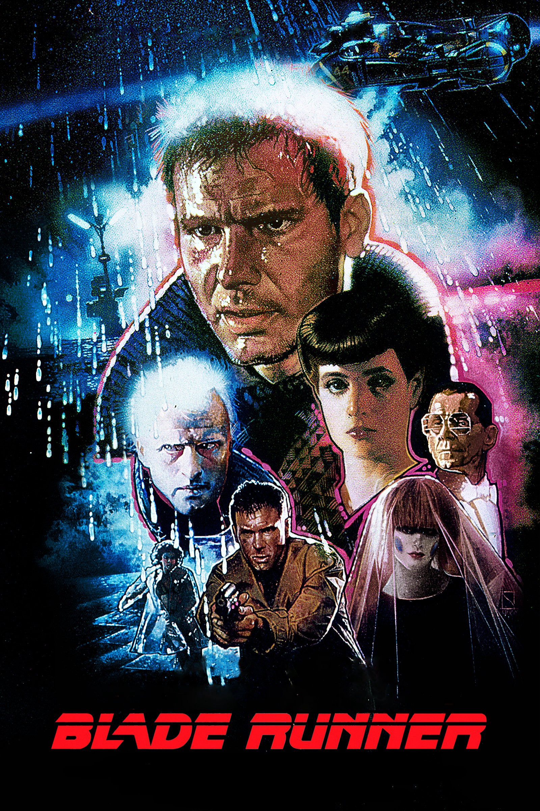

Best Sci-Fi films
2020-10-08

Now i write about only 1 film, it`s a "Balde runner".
Blade Runner is a 1982 science fiction film directed by Ridley Scott, and written by Hampton Fancher and David Peoples. Starring Harrison Ford, Rutger Hauer, Sean Young and Edward James Olmos, it is loosely based on Philip K. Dick's novel Do Androids Dream of Electric Sheep? (1968). The film is set in a dystopian future Los Angeles of 2019, in which synthetic humans known as replicants are bio-engineered by the powerful Tyrell Corporation to work at space colonies. When a fugitive group of advanced replicants led by Roy Batty (Hauer) escapes back to Earth, burnt-out cop Rick Deckard (Ford) reluctantly agrees to hunt them down. Blade Runner initially underperformed in North American theaters and polarized critics; some praised its thematic complexity and visuals, while others critiqued its slow pacing and lack of action. It later became an acclaimed cult film regarded as one of the all-time best science fiction films. Hailed for its production design depicting a decaying future, Blade Runner is a leading example of neo-noir cinema. The film's soundtrack, composed by Vangelis, was nominated in 1982 for a BAFTA and a Golden Globe as best original score. The film has influenced many science fiction films, video games, anime, and television series. It brought the work of Philip K. Dick to the attention of Hollywood, and several later big-budget films were based on his work, such as Total Recall (1990), Minority Report (2002) and A Scanner Darkly (2006). In the year after its release, Blade Runner won the Hugo Award for Best Dramatic Presentation, and in 1993 it was selected for preservation in the U.S. National Film Registry by the Library of Congress as being "culturally, historically, or aesthetically significant". A sequel, Blade Runner 2049, was released in October 2017. Seven different versions of Blade Runner exist as a result of controversial changes requested by studio executives. A director's cut was released in 1992 after a strong response to test screenings of a workprint. This, in conjunction with the film's popularity as a video rental, made it one of the earliest movies to be released on DVD. In 2007, Warner Bros. released The Final Cut, a 25th-anniversary digitally remastered version. This is the only version over which Scott retained artistic control.